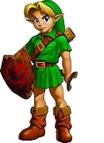
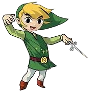
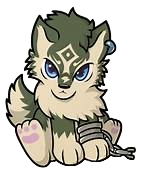
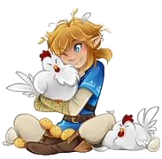
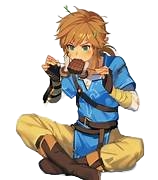
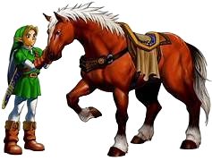
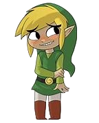

Contact
You can contact Link through his trusty fairy companion Navi. He also has an Instagram and Twitter which he checks irregulary


There are many different iterations of Link, but in each one he is part of the Hylian Race (Half Human/ Half Elf)
In each iteration, he is the possesser of the Triforce of Courage, and owner of the Master Sword
This version of Link grew up in Hyrule Castle, his duty was to defend Princess Zelda from harm
Ultimately, he failed as a child - and Ganondorf took power and captured Zelda
He came back as an adult to fight Ganondorf, and the timeline splits - either he defeats Ganondorf, or he dies in the battle :(
This version of Link grew up on an island named Outset Island, and he lives a normal life with his sister Aryll
One day, tradegy strikes and his sister is captured by the Sea King, Helmeroc
Link sets out on a voyage through the sea to find his sister
Ultimately, Link rescues his sister, and they set out to find a new world together, with his sisters new name being Zelda
This version of Link grew up in Ordon Village, and he lives as a horse wrangler
One day, tradegy strikes and all of the village children are captured by King Bublin
Link tries to save them, but he is turned into a wolf
With the help of a witch named Midna, Link returns to his Hylian form and defeats the wizard Zant and rescues the children
Link loves picking up chickens and throwing them at inoccent peasants, but if he gets too careless, they will attack him in a swarm of chicken anger
Link partakes in recreational potion drinking, including potions that give him longer stamina, potions for invivibiity, and sometimes he collects the tears of fairies and he drinks them for power
Link loves riding horses, his favorite horse is named Epona, he must race the head of the horse-stable in order to own her
I mean...just look at him!
You can contact Link through his trusty fairy companion Navi. He also has an Instagram and Twitter which he checks irregulary